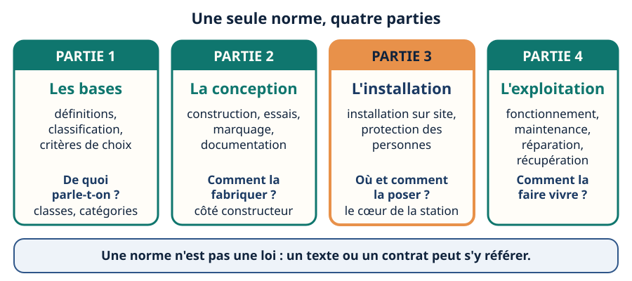
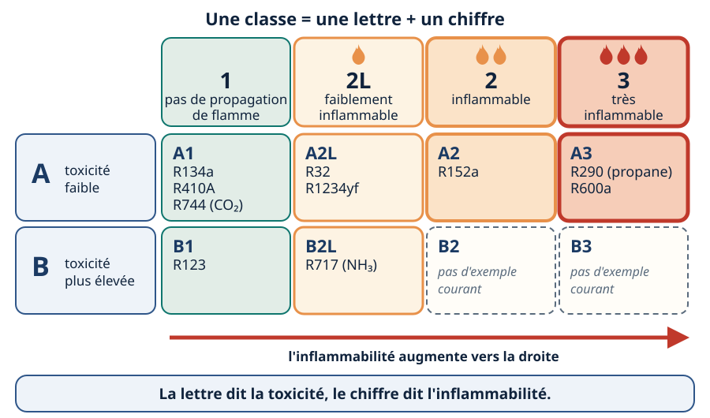
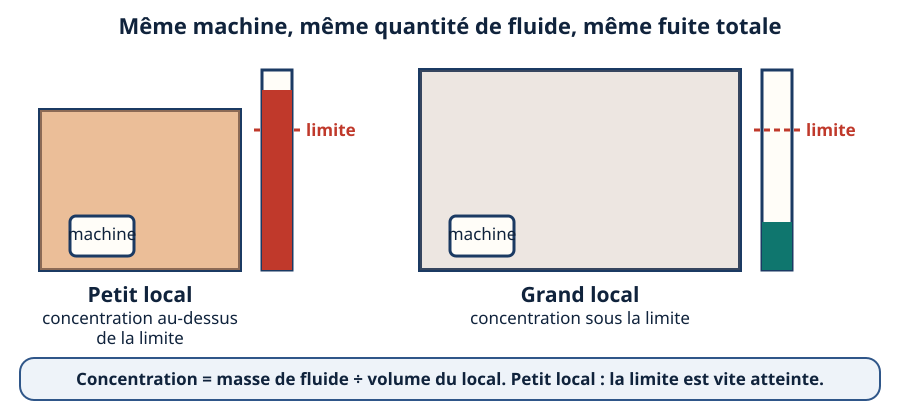

NF EN 378 — la sécurité du système frigorifique, du fluide au local
Mini-station commentée · 8 écrans et 4 questions · environ 10 minutes
Objectif
À la fin de la station, vous savez lire la classe de sécurité d’un fluide, qualifier un local (catégorie d’accès) et un emplacement, expliquer pourquoi la charge est limitée et dérouler la démarche du technicien d’études : classe, accès, emplacement, puis charge contre limite. Vous savez aussi que le R290 est A3, pas A2L.
Référentiel
TP TECVC, REAC TP-00133 : CP9 (climatisation) — choisir et dimensionner une installation en respectant les contraintes de sécurité du fluide. Attestation d’aptitude 2025 : 1.07 (caractéristiques des hydrocarbures, du CO₂ et du NH₃), 1.08 (combustibilité, limites de charge, limites d’occupation), 11.03 (normes de sécurité pour fluides inflammables, toxiques ou à haute pression), 12.02 (détection, ventilation), 12.03 (calcul de la charge d’un fluide inflammable).
Chaque écran peut être expliqué à voix haute : le bouton « Écouter » commente ce que vous voyez. Rien n'est dit qui ne soit aussi écrit.
1 / 12
Écran 1 sur 8
Une norme en quatre parties, pas une loi
La NF EN 378 — Systèmes frigorifiques et pompes à chaleur, exigences de sécurité et d’environnement — est la référence du métier pour la sécurité d’une installation frigorifique. Elle est publiée en quatre parties, chacune répond à une question : de quoi parle-t-on, comment la fabriquer, où et comment la poser, comment la faire vivre.
Ce n’est pas une loi. C’est une norme volontaire et payante : elle ne s’impose que si un texte ou un contrat s’y réfère. Sa partie 2 (conception) est harmonisée avec la directive équipements sous pression et la directive machines ; et le règlement de sécurité des établissements recevant du public (ERP) s’appuie sur la classification de la partie 1 pour les fluides frigorigènes (article CH 35).
Norme payante
Cette station n’en cite que l’objet, la structure et ce qui est public. Les valeurs chiffrées de charge se lisent dans l’édition en vigueur, jamais ici.

La partie 3, en orange, est celle du technicien d’études et de l’installateur.
Écran 2 sur 8
Deux lettres, deux dangers : la classe de sécurité
Avant toute chose, la norme range chaque fluide dans une classe de sécurité, issue de la classification internationale ISO 817. Elle croise deux axes :
la lettre dit la toxicité : A faible, B plus élevée ;
le chiffre dit l’inflammabilité : 1 aucune propagation de flamme, 2L faiblement inflammable, 2 inflammable, 3 très inflammable.
La sous-classe 2L a été introduite dans la NF EN 378 en 2016 : elle isole les fluides difficiles à enflammer, dont la flamme se propage lentement : c’est la classe du R32 et des HFO (hydrofluoro-oléfines) comme le R1234yf. La classe d’un fluide se lit dans les tables de la norme ou de la fiche du fabricant, à la version à jour.

La lettre se lit en ligne, le chiffre en colonne : l’inflammabilité augmente vers la droite.
Écran 3 sur 8
Le piège : le R290 est A3, pas A2L
Le R290 est du propane : un hydrocarbure pur, donc A3 — très inflammable. Le R32 et les HFO comme le R1234yf sont A2L. On les range souvent ensemble parce que les deux familles accompagnent la baisse des fluides à fort potentiel de réchauffement planétaire (PRP) ; ce sont pourtant deux classes, donc deux jeux de règles.
Piège
« Le R290 est A2L comme le R32 » est faux. Pour un technicien d’études, remplacer un fluide A2L par du R290, c’est changer de classe : la limite de charge, la zone autour de la machine et le matériel ne se traitent plus de la même façon.
Sur la même échelle, les deux fluides sont aux deux extrémités des classes inflammables.
Écran 4 sur 8
Qui a accès au local : les catégories a, b et c
Deuxième axe : qui fréquente le local où se trouve le fluide. La norme parle de catégorie d’accès (dans sa version de 2008, de catégorie d’occupation). Elle en distingue trois :
a — accès général : n’importe qui peut entrer, sans connaître les consignes (logement, école, hôtel, magasin) ;
b — accès surveillé : un nombre limité de personnes, dont certaines connaissent les consignes générales (bureaux, laboratoires) ;
c — accès autorisé : seules des personnes autorisées, formées aux consignes générales et particulières (atelier de production, entrepôt frigorifique).
Plus le public est large et non averti, plus la limite de charge est sévère : la même machine peut être admise en catégorie c et refusée en catégorie a. Le technicien d’études qualifie donc le local avant de choisir le fluide.
Le nombre de pictogrammes diminue de a à c : c’est le public admis qui diminue.
Écran 5 sur 8
Où est le fluide : l’emplacement du système
Troisième axe : où se trouvent les parties qui contiennent le fluide. La norme classe les systèmes par emplacement en quatre classes (I à IV) : par exemple, la classe III désigne un système entièrement placé en salle des machines ou à l’extérieur, ce qui est compatible avec un lieu accessible au public.
En système direct, le fluide frigorigène circule jusque dans l’espace occupé.
En système indirect, il reste dans la salle des machines ou dehors : un circuit secondaire, souvent de l’eau, distribue le froid.
C’est un levier de conception : quand la limite de charge ne passe pas dans l’espace occupé, on éloigne le fluide des personnes. Les salles des machines ont ensuite leurs exigences propres (partie 3).
Orange : le fluide frigorigène. Bleu : l’eau du circuit secondaire.
Écran 6 sur 8
Pourquoi la charge est limitée
Si toute la charge s’échappait dans le local, le fluide se répartirait dans son volume : concentration = masse de fluide ÷ volume du local. La norme fixe donc une limite de concentration — fondée sur la toxicité ou le manque d’oxygène pour les fluides non inflammables, sur la limite inférieure d’inflammabilité pour les fluides inflammables — et en déduit une charge maximale pour chaque local.
Elle dépend de trois entrées, vues dans les écrans précédents : la classe du fluide, la catégorie d’accès, l’emplacement — plus la taille du local. Dans les ERP, l’article CH 35 limite de la même façon la charge d’un fluide inflammable selon la surface du local, pour ne pas atteindre la limite inférieure d’inflammabilité en cas de fuite.
Le réflexe
La charge maximale se calcule avec la méthode et les tables de la norme en vigueur, et se recoupe avec la fiche du constructeur. Elle ne s’estime jamais.

Même masse de fluide : seul le volume du local change la concentration.
Écran 7 sur 8
Détection et ventilation : le filet, pas la première barrière
Quand la limite de charge gêne, on peut la compenser par des équipements : un détecteur qui déclenche l’alarme à un seuil réglé, une ventilation mécanique renforcée, la mise hors tension du matériel. Dans les ERP, l’article CH 35 admet ainsi qu’une détection associée à une extraction mécanique permette de lever certaines limites de charge.
Mais l’ordre des priorités compte, surtout avec un fluide inflammable : 1. limiter les points de fuite ; 2. ventiler en continu ; 3. choisir un matériel adapté à la zone. La détection est un filet de sécurité : elle ne remplace aucune de ces barrières, et un matériel non adapté ne devient pas acceptable parce qu’un détecteur veille.
Pour les fluides A2L, A2, A3, B2L, B2 et B3, la partie 3 de la norme attend en salle des machines une analyse des zones à risque d’explosion : c’est le lien avec la station sur les zones ATEX.

En haut la chaîne d’une fuite ; en dessous, l’ordre des trois barrières.
Écran 8 sur 8
La démarche du technicien d’études — et le bilan
Je lis la classe du fluide (lettre = toxicité, chiffre = inflammabilité) — et je n’oublie pas : R290 = A3.
Je qualifie le local : catégorie d’accès a, b ou c.
Je situe le système : direct ou indirect, dans l’espace occupé ou en salle des machines.
Je compare la charge du circuit à la limite calculée ; si elle est dépassée, j’agis sur un levier.
Je documente le choix et ses hypothèses.
Le réflexe : la limite se lit dans la norme en vigueur, jamais à l’estime.
Trois entrées, une comparaison, cinq leviers si la charge dépasse la limite.
Question 1 sur 4
Un fluide est classé B2L. Que pouvez-vous en déduire ?
Rappel de l’écran 2 — la lettre en ligne, le chiffre en colonne.
Question 2 sur 4
Un collègue affirme : « Le R290 est A2L comme le R32, les règles sont les mêmes. » Que lui répondez-vous ?
Rappel de l’écran 3 — deux fluides, deux extrémités de l’échelle.
Question 3 sur 4
La même machine, avec la même quantité de fluide, passe d’un grand local à un petit local. Après une fuite totale, la concentration…
Rappel de l’écran 6 — même masse, volume différent.
Question 4 sur 4
Un client veut supprimer la ventilation du local technique « puisqu’un détecteur de fuite est installé ». Que lui répondez-vous ?
Rappel de l’écran 7 — la détection est le filet, pas la première barrière.
Les correspondances de la station
F-Gaz 3 — le règlement (UE) 2024/573 (même sous-ligne)
— le règlement pousse vers les fluides naturels et à bas PRP, c’est-à-dire vers les classes A2L, A3 et B2L de cette station.
Aptitude & capacité (même sous-ligne)
— le groupe G12 de l’attestation demande de calculer la charge d’un fluide inflammable selon les normes de sécurité.
Zones ATEX (autre sous-ligne : Risques professionnels)
— une classe A2L ou A3 ouvre la question de l’atmosphère explosive et du matériel adapté.
Catégories I à IV (autre sous-ligne : La DESP)
— le groupe du fluide côté équipement sous pression ne se confond pas avec la classe NF EN 378.
![Deux coupes de bâtiment. À gauche, le système direct : un tuyau orange de fluide frigorigène relie le groupe extérieur à l'unité intérieure, dans l'espace occupé. À droite, le système indirect : le fluide reste dans une petite salle des machines cerclée de vert avec le groupe froid, et un tuyau bleu d'eau apporte le froid jusqu'au ventilo-convecteur de l'espace occupé. Une légende donne les couleurs et une bande rappelle que le classement par emplacement dit où sont les parties qui contiennent le fluide.](svg/emplacement.svg)
![Un logigramme. Trois étapes en haut : la classe du fluide, la catégorie d'accès, l'emplacement. Elles mènent à un losange : la charge du circuit est-elle inférieure ou égale à la limite calculée ? Oui : conforme, on retient la solution et on la documente. Non : on agit sur un des cinq leviers en dessous : réduire la charge, changer l'emplacement, passer en système indirect, ajouter détection et ventilation, changer de fluide. Une bande rappelle que la limite se lit dans la norme et la fiche du constructeur.](svg/demarche-technicien.svg)